HR Setting#
Cara Menjalankan Menu HR Setting#
Untuk menjalankan menu HR Setting. Hal pertama adalah klik module Personnel Management pada halaman utama.

Selanjutnya maka akan ditampilkan menu-menu yang terdapat pada module Personnel Management. Kemudian klik menu HR Setting. 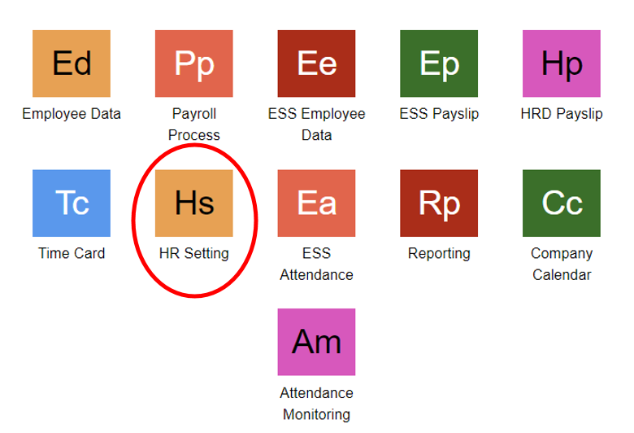
Selain itu, dapat membuka menu HR Setting dengan melakukan pencarian pada kolom pencarian Lalu ketikkan kode menu HRST. 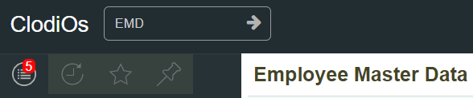
Pengaturan Sub Menu Organization#
Untuk melakukan pengaturan terhadapa sub menu Organization, langkah pertama buka terlebih dahulu pengaturan organization yang diinginkan. Dengan klik salah satu Organization yang diinginkan, lalu klik Open. 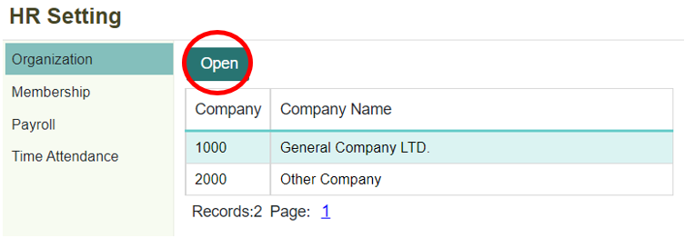
Kemudian akan ditampilkan pengaturan untuk sub menu Organization. Apabila ingin menambahkan Organization Unit yang baru, dapat dengan klik ikon +. 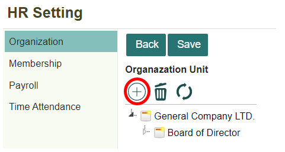
Maka akan ditampilkan form untuk menambahkan unit baru. Isi setiap kolom yang ada. Kemudian klik tombol OK. 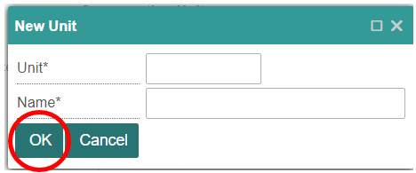
Note
Isi semua kolom yang bertanda (*)
Informasi Kolom
No |
Kolom |
Keterangan |
|---|---|---|
1 |
Unit |
Kode Unit |
2 |
Nama |
Nama Unit Organisasi |
Kemudian untuk menghapus salah satu unit organisasi yang dibuat, dengan klik unit organisasi yang ingin di hapus, lalu klik ikon Remove. 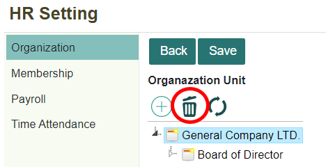
Maka akan tampil notifikasi konfirmasi untuk penghapusan. Klik tombol OK untuk menghapus, apabila ingin membatalkan penghapusan klik tombol Cancel. 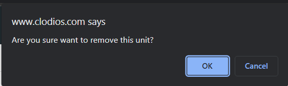
Untuk melakukan refresh data, maka klik tombol Refresh. 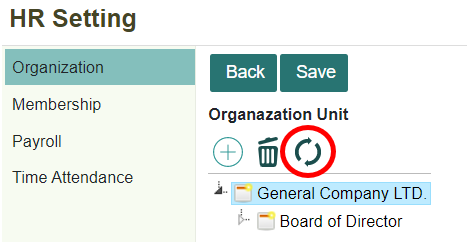
Selain untuk menambahkan unit organization yang baru, dapat juga menambahkan setiap komponen yang ada di dalam organization, seperti Group, Position, Job, Area, Grade, Unit Type. 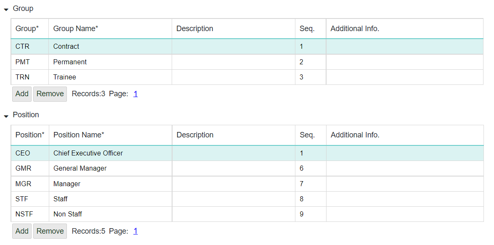
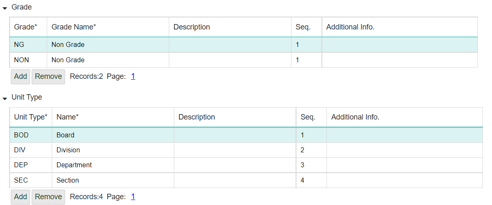
Note
Isi semua kolom yang bertanda (*)
Informasi Kolom
No |
Kolom |
Keterangan |
|---|---|---|
1 |
Description |
Keterangan |
2 |
Seq |
Urutan |
3 |
Additional Info |
Informasi Tambahan |
4 |
Group |
Kode Kelompok |
5 |
Group Name |
Nama Kelompok (Group) |
6 |
Position |
Kode Posisi |
7 |
Position Nama |
Nama Posisi |
8 |
Job |
Kode Pekerjaan |
9 |
Job Name |
Nama Pekerjaan |
10 |
Area |
Kode Area |
11 |
Area Name |
Nama Area |
12 |
Grade |
Kode Nilai atau Tingkatan |
13 |
Grade Name |
Nama Nilai atau Tingkatan |
14 |
Unit Type |
Kode Tipe Unit |
15 |
Name |
Nama Unit |
Untuk menambahkan kolom baru pada setiap masing-masing komponen. Klik Add.

Kemudian isi dan lengkapi informasi kolom yang ada. Setelah itu untuk menyimpan data yang sudah ditambahkan, Save yang di atas.

Kemudian untuk menghapus kolom yang sudah ada atau menghapus data organization yang sudah ada klik Remove.

Setelah itu, klik Save untuk menyimpan data.
Pengaturan Membership#
Kemudian untuk menambahkan membership, dapat dengan klik sub menu Membership.

Kemudian untuk menambahkan membership yang baru, klik tombol Add 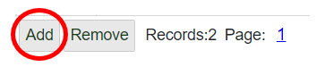
Maka sistem akan menambahkan kolom baru yang kosong secara otomatis. Isi dan lengkapi kolom tersebut, setelah itu klik tombol Save. 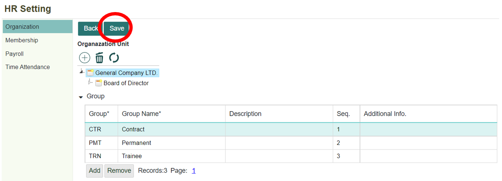
Kemudian untuk menghapus kolom yang sudah ada atau menghapus data organization yang sudah ada klik tombol Remove. 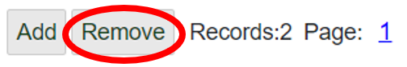
Setelah itu, klik tombol Save untuk menyimpan data.
Pengaturan Payroll#
Untuk melakukan pengaturan pada untuk payroll. Dapat dengan klik sub menu Payroll. 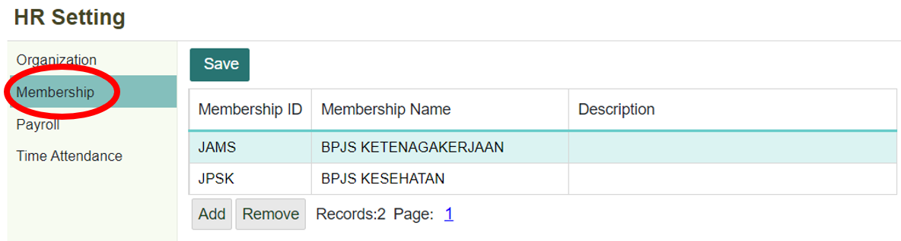
Pada sub menu Payroll, terdapat beberapa komponen : Payroll Area, Payroll Component, dan Payroll Type.
Payroll Area Untuk mengatur atau menambahkan payroll area yang baru, dapat dengan klik tombol Add. 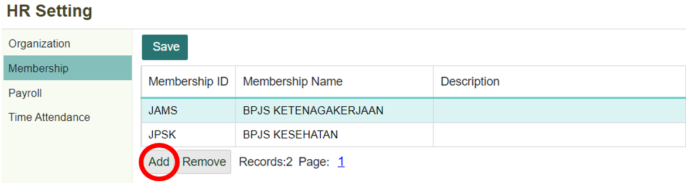
Informasi Kolom
No |
Kolom |
Keterangan |
|---|---|---|
1 |
Payroll Area |
Kode Area Penggajian |
2 |
Name |
Nama Area Penggajian |
3 |
Description |
Keterangan |
Setelah kolom telah terisi, klik tombol Save untuk menyimpan data. 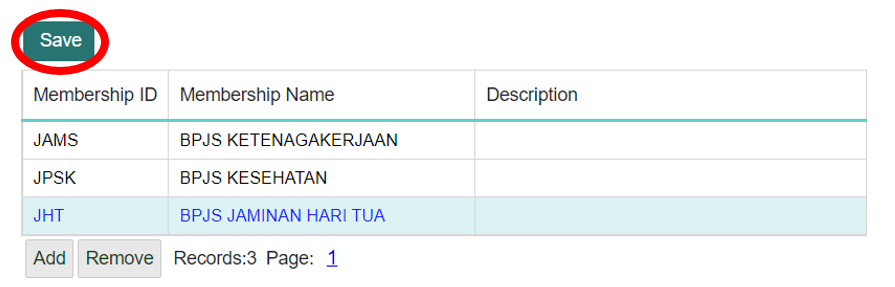
Apabila ingin menghapus data yang sudah ada atau kolom yang ada, dapat dengan klik kolom yang ingin di hapus, kemudian klik tombol Remove, setelah itu klik tombol Save untuk menyimpan perubahan 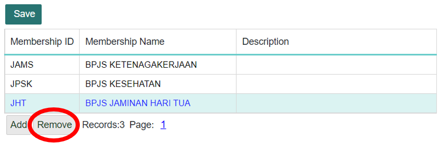
Payroll Component Untuk mengatur atau menambahkan payroll component yang akan digunakan, dapat dengan klik tombol Add 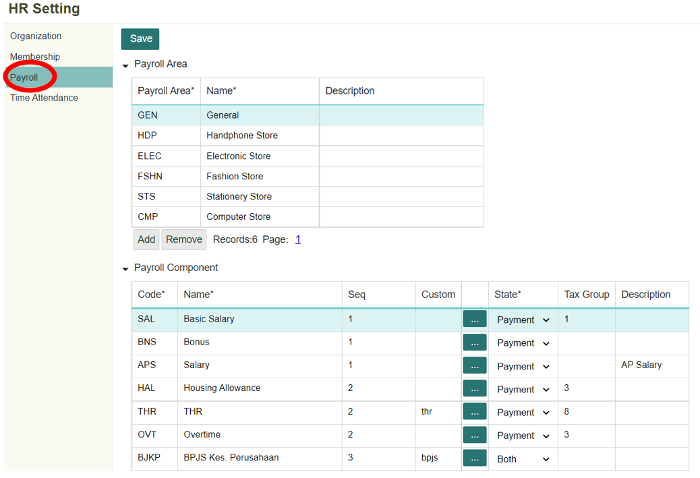
Informasi Kolom
No |
Kolom |
Keterangan |
|---|---|---|
1 |
Code |
Kode Komponen Penggajian |
2 |
Name |
Nama Komponen Penggajian |
3 |
Seq |
Urutan |
4 |
Custom |
- |
5 |
State |
- |
6 |
Tax Group |
Kelompok Pajak |
7 |
Description |
Keterangan |
Setelah kolom telah terisi, klik tombol Save untuk menyimpan data. 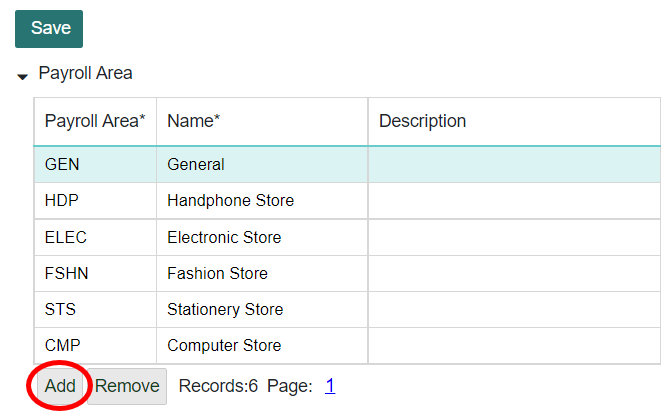
Apabila ingin menghapus data yang sudah ada atau kolom yang ada, dapat dengan klik kolom yang ingin di hapus, kemudian klik tombol Remove, setelah itu klik tombol Save untuk menyimpan perubahan. Save untuk menyimpan perubahan. 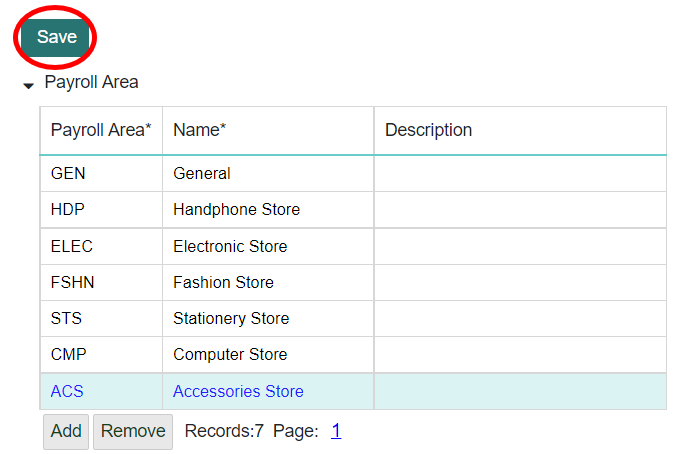
Payroll Type Untuk membuat atau menambahkan tipe penggajian yang baru, dapat dilakukan dengan klik tombol Add. 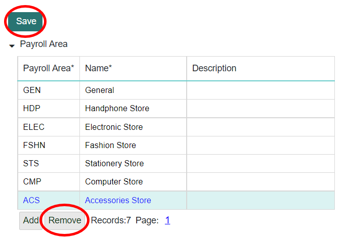
Informasi Kolom
No |
Kolom |
Keterangan |
|---|---|---|
1 |
Type |
Kode Tipe Penggajian |
2 |
Name |
Nama Tipe Penggajian |
3 |
Description |
Keterangan |
Setelah kolom telah terisi, klik tombol Save untuk menyimpan data. 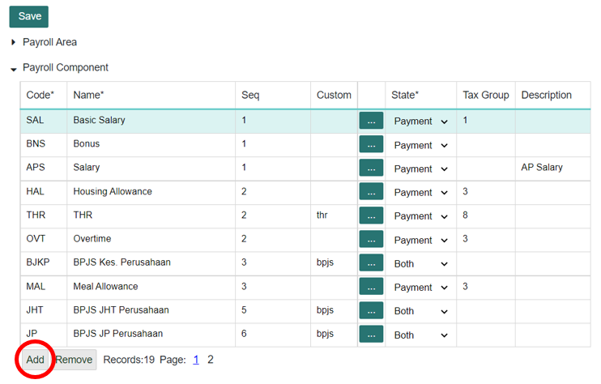
Untuk menambahkan komponen-komponen yang terdapat di dalam salah satu Payroll Type. Klik tombol Detail. 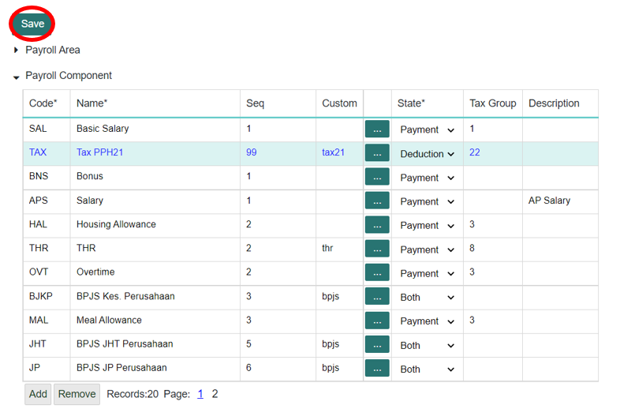
Apabila ingin menghapus data yang sudah ada atau kolom yang ada, dapat dengan klik kolom yang ingin di hapus, kemudian klik tombol Remove, setelah itu klik tombol 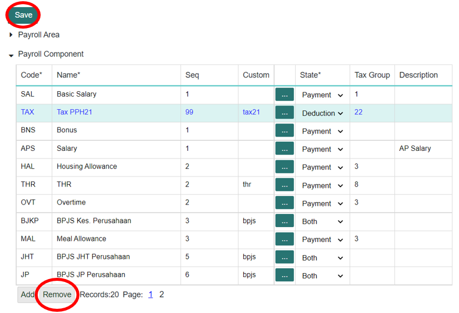
Note
Isi semua kolom yang bertanda (*)
Pengaturan Time Attendance#
Untuk melakukan pengaturan pada untuk time attendance. Dapat dengan klik sub menu Payroll. 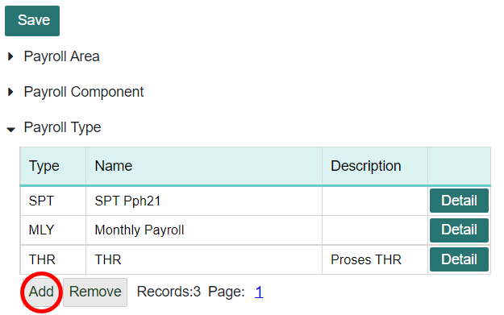
Pilih salah satu company yang ingin dilakukan pengaturan time attendance. Kemudian klik tombol Open. 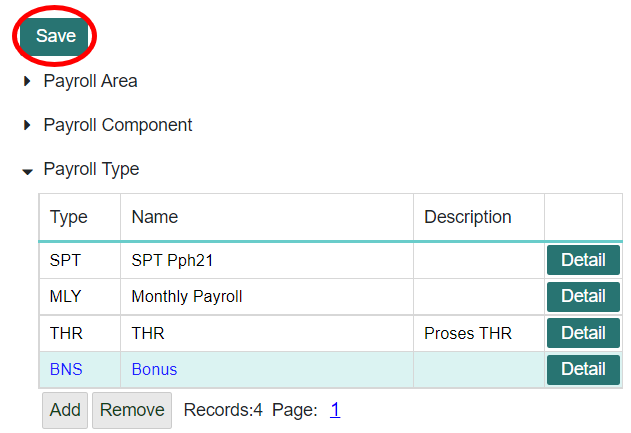
Untuk pengaturan Time Attendance ini mempunyai 3 komponen, yaitu Work Location, Work Schedule, Absence Type. 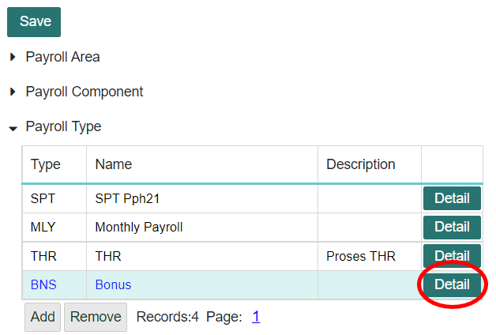
Kemudian ketika ingin menambahkan kolom atau data yang baru, klik tombol Add. Isi dan lengkapi setiap kolom. 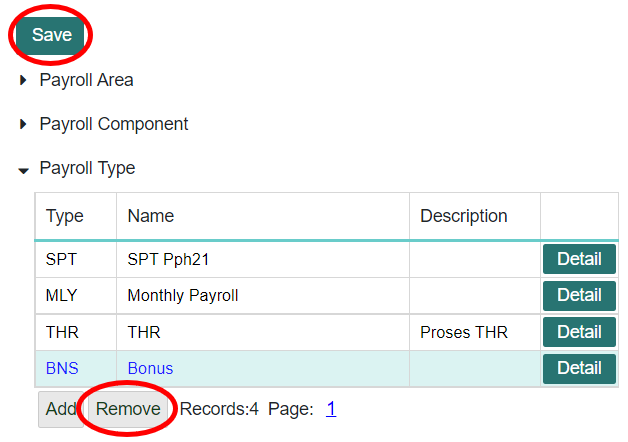
Informasi Kolom
No |
Kolom |
Keterangan |
|---|---|---|
1 |
Code |
Kode |
2 |
Work Location Name |
Tempat Lokasi Bekerja |
3 |
Description |
Keterangan |
4 |
Seq |
Urutan/Nomor Urut |
5 |
Additional Info. |
Informasi Tambahan/Pilihan |
6 |
Custom |
- |
7 |
Schedule Name |
Nama Jadwal |
8 |
Absence Name |
Nama Absen |
Setelah kolom sudah terisi, maka klik tombol Save untuk menyimpan data yang baru dimasukkan. 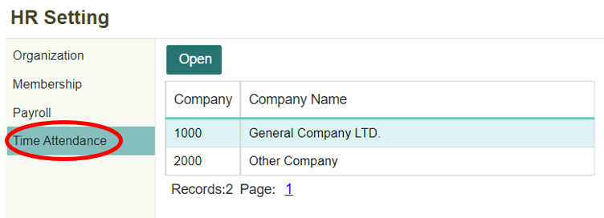
Kemudian untuk menghapus kolom yang sudah ada atau menghapus data time attendance yang sudah ada klik tombol Remove. 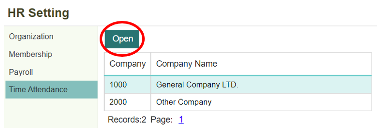
Setelah itu, klik tombol Save untuk menyimpan data.